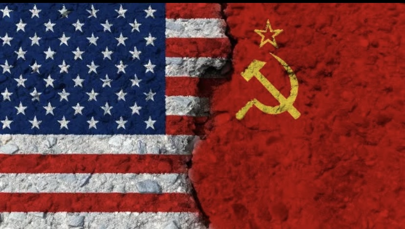
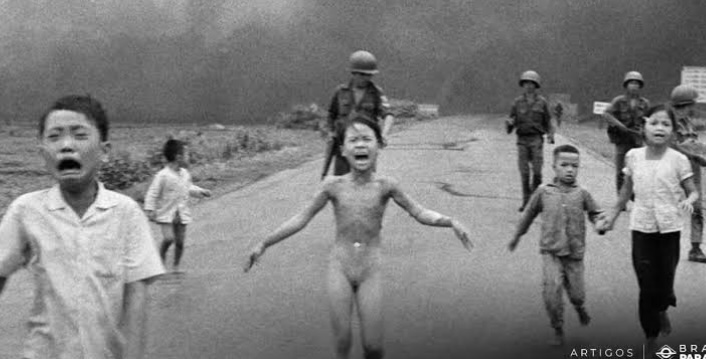

GUERRA FRIA
A Guerra Fria teve início na década de 1940, pouco depois que a Segunda Guerra Mundial teve fim. Esse conflito foi resultado da disputa pela hegemonia mundial entre Estados Unidos e União Soviética, os dois países que saíram com status de potência após a guerra. A diferença de ideologia é a chave para entendermos esse conflito. Os historiadores consideram um discurso realizado pelo presidente norte-americano Harry Truman o ponto de partida para o início da Guerra Fria. Nesse discurso, realizado em 1947, Truman pedia aumento na liberação de verbas para que os Estados Unidos barrassem o avanço socialista pelo mundo. A partir daí, nasceu a Doutrina Truman, a ideologia que reunia o conjunto de medidas tomadas pelos Estados Unidos para conter o avanço do socialismo pela Europa. Dentro da Doutrina Truman está o Plano Marshall, que foi o plano de financiamento dos países europeus que haviam sido destruídos com a Segunda Guerra. O discurso maniqueista propagado por essa ideologia acabou criando um clima alarmista que contribuiu para acirrar os ânimos entre as duas nações. Conforme a rivalidade aumentou, os soviéticos também aderiram ao discurso maniqueista, consolidando a polarização do mundo.
CARACTERÍSTICAS DA GUERRA FRIA
Ao longo da duração da Guerra Fria (1947-1991), algumas ações puderam ser observadas, como a corrida armamentista, pois a disputa entre americanos e soviéticos fazia com que o clima de guerra entre os dois lados existisse e isso levou as duas nações a investirem maciçamente no desenvolvimento de armas. Houve também, nesse período, a corrida espacial, pois a rivalidade entre americanos e soviéticos fez com que os dois países investissem no desenvolvimento tecnológico, e a exploração espacial acabou sendo um campo dessa disputa. Os soviéticos foram os primeiros a enviar um satélite, um animal, e um ser humano para o espaço, e os americanos conseguiram levar o primeiro humano à Lua. Outra característica marcante da Guerra Fria foi a polarização do mundo em dois grandes blocos: um em apoio aos Estados Unidos e adepto ao capitalismo, e outro em apoio à União Soviética e adepto ao socialismo. A formação desses blocos ocasionou a formação de uma série de tratados econômicos e militares. No campo econômico, podemos destacar a formação da União Europeia, formada entre as nações capitalistas da Europa Ocidental, e do Comecon, formado pelas nações socialistas do leste europeu; no campo militar, por sua vez, podemos destacar a Organização do Tratado do Atlântico Norte, liderada pelos EUA, e o Pacto de Varsóvia, liderado pela URSS.
REVOLUÇÃO CHINESA
A guerra entre os comunistas na China e os nacionalistas (capitalistas) estendia-se desde a década de 1920, sendo interrompida por conta da invasão japonesa na década de 1930. Quando a Segunda Guerra Mundial acabou, o conflito foi retomado e os comunistas liderados por Mao Tsé-Tung, consideraram derrotar os nacionalistas. Em 1949, a China converteu-se em uma nação comunista, e os Estados Unidos passaram a intervir mais abertamente na Ásia para impedir que outros países fossem influenciados pela China.
GUERRA DA CORÉIA
A Coreia foi ocupada e dividida por americanos e soviéticos, no final da Segunda Guerra Mundial, e dessa divisão nasceram duas nações: a Coreia do Norte, comunista, e a Coreia do Sul, capitalista. Essa divisão resultou em uma guerra iniciada em 1950, quando os norte-coreanos invadiram a Coreia do Sul com o objetivo de conquistá-la e de reunificar as Coreias. Os sul-coreanos lutaram com o apoio aberto dos Estados Unidos que chegaram, inclusive, a enviar soldados para participar dessa guerra. Em 1953, um armistício (tratado de paz) foi assinado entre os dois lados, e a divisão entre Coreia do Sul e Coreia do Norte permanece existindo até hoje.
GUERRA DO VIETNÃ
Outro símbolo da interferência norte-americana na geopolítica da Ásia durante a Guerra Fria foi o Vietnã. Esse país era uma antiga colônia francesa que conquistou sua independência após uma guerra de oito anos de duração (os EUA apoiaram os franceses). Depois desse conflito, o país dividiu-se entre Vietnã do Norte e Vietnã do Sul, sendo os primeiros influenciados pelo comunismo e os segundos pelo capitalismo. A Guerra do Vietnã teve início em 1959, e a entrada dos Estados Unidos nesse conflito aconteceu em 1965. O envolvimento americano na guerra foi extremamente impopular na sociedade norte-americana, teve um peso altíssimo para a economia do país e matou milhares de jovens americanos, além de ter resultado em uma enorme barbárie no país asiático. Em 1973, as tropas norte-americanas foram retiradas do Vietnã e, em 1976, os comunistas venceram a guerra e reunificaram o país.
CRISE DOS MÍSSEIS (CUBA)
A Crise dos Mísseis é, provavelmente, o momento de maior tensão em toda a Guerra Fria, uma vez que a possibilidade de guerra entre norte-americanos e soviéticos foi real. Tudo começou quando uma revolução nacionalista aconteceu em Cuba, em 1959. Por conta da pressão norte-americana sobre Cuba, o pequeno país caribenho alinhou-se com os soviéticos para fugir do embargo econômico. Em 1962, soviéticos e cubanos chegaram a um acordo de instalar uma base de mísseis em Cuba, mas a informação foi descoberta pelos americanos e uma crise diplomática teve início. Os EUA afirmaram que declararia guerra caso os mísseis soviéticos fossem instalados. Depois de duas semanas de negociação, a saída foi encontrada: os mísseis soviéticos não seriam instalados em Cuba, e os americanos retiraram mísseis instalados na Turquia.
MURO DE BERLIM
Talvez o grande símbolo da polarização da Guerra Fria tenha sido o caso da Alemanha, país que se dividiu em duas nações e assim permaneceu durante grande parte da segunda metade do século XX. A região ocupada pelos soviéticos, ao final da Segunda Guerra, converteu-se na Alemanha Oriental, enquanto que a parte ocupada por americanos, franceses e britânicos converteu-se na Alemanha Ocidental, cada qual inspirada na sua própria ideologia. Essa divisão, somada à fuga da população da Alemanha Oriental para a Alemanha Ocidental, principalmente em Berlim, a capital dos dois países, levou os alemães orientais e soviéticos a investirem na construção de um muro que isolava a capital da Alemanha Ocidental e impedia que as pessoas se mudassem para lá. O Muro de Berlim teve sua construção iniciada em 1961, permanecendo de pé até 1989, quando a crise do bloco socialista na Europa e a crise econômica e política que atingiu a Alemanha Oriental, levou a população a derrubar o muro. Em 1990, a Alemanha reunificou-se.
FIM DA GUERRA FRIA
A Guerra Fria chegou ao seu fim com a decadência da União Soviética e do bloco socialista. A crise soviética relaciona-se com o fato de a economia soviética ter entrado em declínio a partir da década de 1970. Os problemas na economia soviética eram mascarados por conta da valorização do preço do petróleo, que fazia com que a arrecadação do país fosse suficiente para esconder problemas latentes, como o da agricultura. O envolvimento da União Soviética com a Guerra do Afeganistão, em 1979, acabou ampliando o desgaste econômico dos soviéticos. Em 1985, Mikhail Gorbachev assumiu o comando soviético e tinha como função solucionar a crise que o país enfrentava naquele momento. Gorbachev propôs reformas por meio da Glasnost e Perestroika, mas as reformas propostas pelo governante soviético contribuíram para aumentar o desgaste do modelo soviético. Em 25 de dezembro de 1991, Gorbachev renunciou, e a União Soviética foi dissolvida. No seu lugar, quinze nações conquistaram sua independência, e o bloco socialista deixou de existir no leste europeu. Esses acontecimentos marcaram o fim da Guerra Fria.
  Visit Youtube.com!